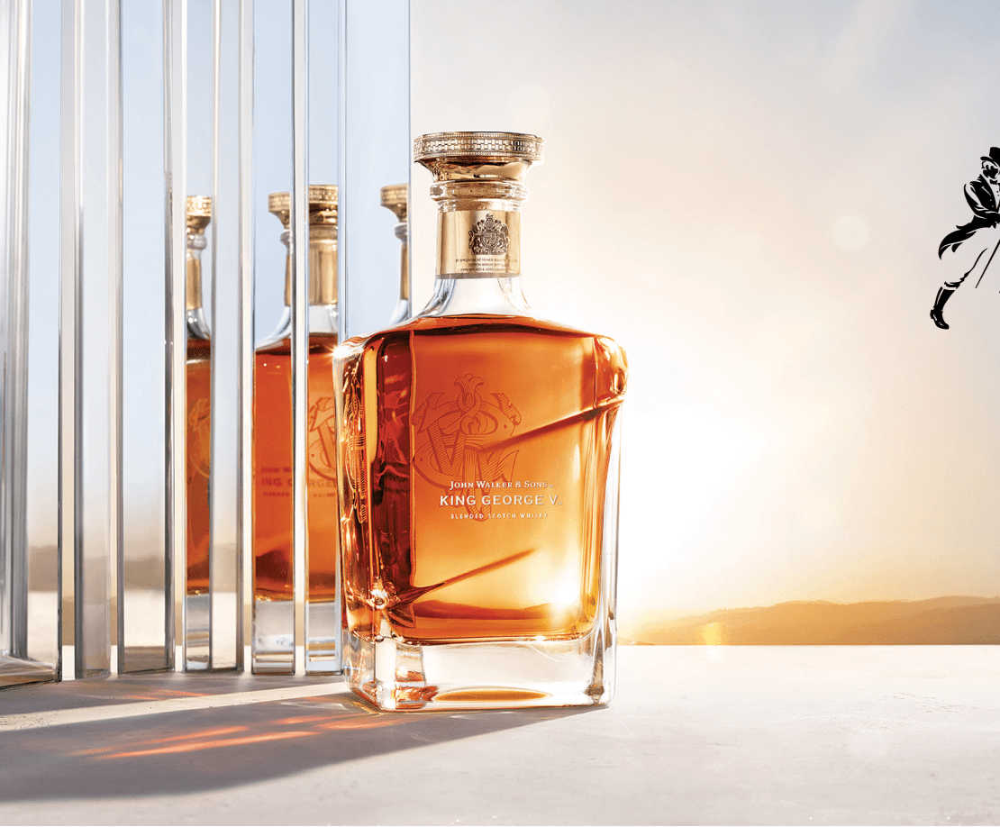
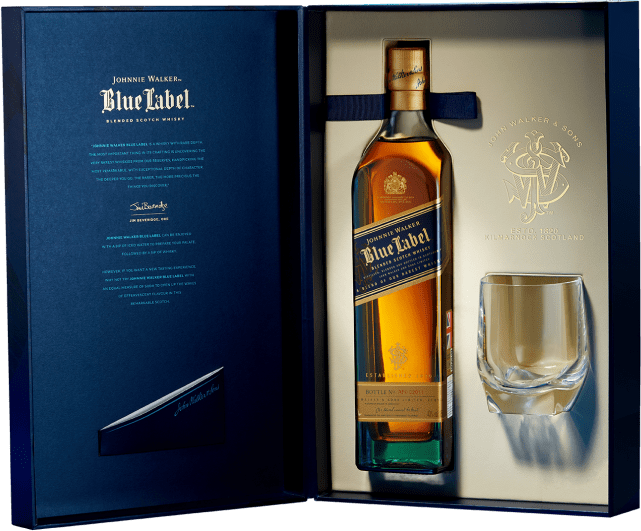
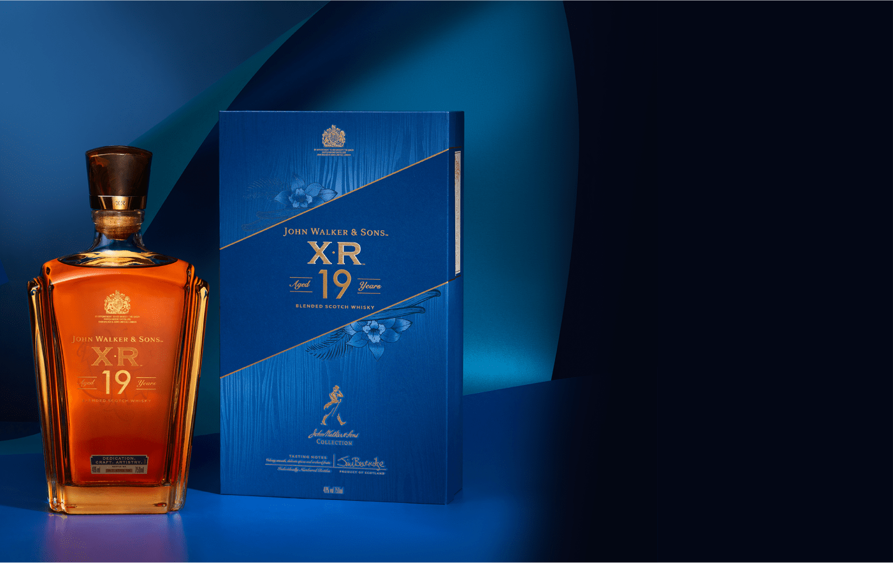
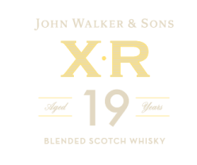
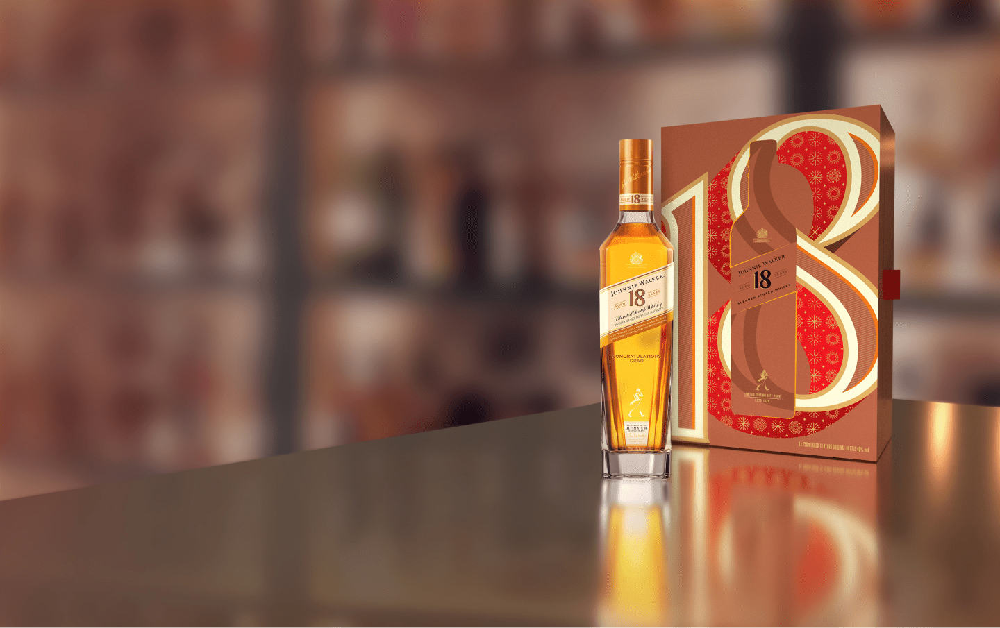
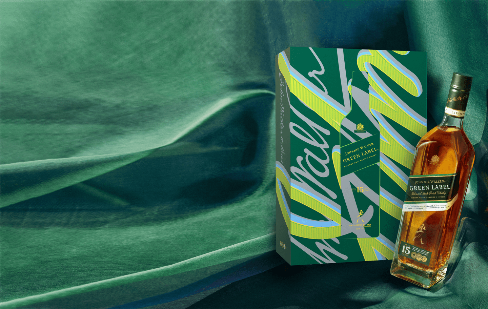

HUYỀN THOẠI ĐẰNG SAU KIỆT TÁC 40 NĂM
Được đóng chai với số lượng cực kì giới hạn, chỉ 398 chai trên
toàn thế giới, Johnnie Walker Master’s Ruby Reserve 40 Y.O là
phiên bản đánh dấu hành trình bốn thập kỷ bậc thầy phối trộn
Jim Beveridge đồng hành cùng thương hiệu whisky danh tiếng.
Chất vị Scotch whisky 40 năm tuổi là sự hòa quyện tinh tế của
8 dòng whisky quý hiếm do chính Jim Beveridge chọn lựa từ hơn
10 triệu thùng ủ, bao gồm cả những chất vị đến từ các nhà
chưng cất huyền thoại Pittyvaich, Port Ellen, Cambus và
Carsebridge. Chất rượu quý hiếm được đựng trong bình pha lê
Baccarat được nung chảy cùng vàng 24 carat ở 540 độ C tạo nên màu
hồng ngọc rực rỡ, tiếp tục được chế tác thủ công hàng giờ liền
để mang đến vẻ ngoài lộng lẫy cho kiệt tác này.
CHẤT SỬ THI TRONG TỪNG GIỌT TUYỆT TÁC
The John Walker được tuyển chọn từ những dòng whisky quý hiếm cùng thời với ngài
John Walker, với nguồn nguyên liệu được tuyển chọn kỹ lưỡng bởi các bậc thầy
phối
trộn để chọn ra các thùng rượu từ 9 nhà chưng cất cùng thời với John Walker
(1805–1857), trong đó có Glen Albyn và Cambus hiện đã ngừng sản xuất. The John
Walker được thiết kế từ pha lê Baccarat với cổ chai nạm vàng 24k, đựng trong hộp
gỗ
sơn mài sang trọng được khắc chế công phu.

MÓN QUÀ DI SẢN CỦA 200 NĂM TINH HOA
Gói gọn trong mình tinh hoa 200 năm của một thương hiệu trứ danh, John Walker &
Sons Bicentenary Blend là 1 trong số rất ít các phiên bản giới hạn nhằm kỷ niệm
2 thế kỷ lừng lẫy của Johnnie Walker. Được kết hợp từ nhiều dòng whisky thượng
hạng có nguồn gốc từ những nhà máy chưng cất huyền thoại như Pittyvaich, Cambus
và Port Ellen, whisky sở hữu chất rượu ngọt ngào từ trái cây, gừng hòa quyện
cùng đường nâu, và kết vị với hương khói mê say.
GIỌT VÀNG LÚC NỬA ĐÊM
Với hương vị phong phú nuông chiều vị giác như một nốt kết ngọt ngào, khó phai
cho những đêm đặc biệt, John Walker & Sons Private Collection 2018 – Midnight
Blend là kết tinh của hành trình tìm kiếm và thử nếm hàng trăm thùng rượu hiếm
từ 4 vùng của Scotland là Lowlands, Speyside, đảo Islay và Highlands, nhằm tạo
ra dòng whisky 28 năm tuổi với hương vị cá tính độc nhất. Phiên bản được đóng
chai với chỉ 3.888 chai trên toàn thế giới.
GIAO HƯỞNG HƯƠNG VỊ
Chỉ có 5.588 chai được đánh số, phiên bản đặc biệt 2017 mang tên “Mastery of
Oak” chính bởi sự cầu kỳ trong việc phối trộn các mẻ rượu được ủ trong nhiều
loại thùng gỗ sồi khác nhau. Quá trình ủ rượu cầu kỳ tạo nên bản hợp xướng hài
hòa của hương và vị – vị ngọt đậm đà của trái cây hòa quyện cùng hương gỗ sồi và
vani lướt nhẹ trong vòm họng, đưa vị giác trải qua nhiều cung bậc khác nhau.

DƯ VỊ NGỌT NGÀO
Phiên bản giới hạn John Walker & Sons Private Collection 2016 – Fine Honeyed
Notes – với 8.888 chai được phân phối bên trong bình thủy tinh sang trọng độc
đáo và đánh số riêng biệt nhằm tôn vinh hình ảnh nhãn nghiêng 24 độ nổi tiếng
của Johnnie Walker. Hơn 100 thùng gỗ sồi chọn lọc từ các nhà chưng cất khác nhau
trong đó có 4 nhà chưng cất ma huyền thoại hiện đã không còn hoạt động.


DẤU ẤN HOÀNG GIA BẢO CHỨNG TUYỆT TÁC
Dòng whisky được chế tác ghi dấu sự kiện nhà John Walker & Sons vinh dự được Vua
George V ban tặng “Bảo chứng hoàng gia” vào 1934, John Walker & Sons King George
V là tuyệt phẩm được đội ngũ chuyên gia pha chế do bậc thầy Jim Beveridge dẫn
đầu tự tay chắt lọc từ những dòng whisky thượng hạng được sản xuất trong triều
đại vua George V trong đó bao gồm những nhà chưng cất huyền thoại hiện đã đóng
cửa như Port Ellen và Port Dundas, hoàn thiện bởi kỹ thuật chế tác bậc thầy.
KHÚC CA KHẢI HOÀN
Johnnie Walker Blue Legendary Eight là phiên bản giới hạn đặc biệt nằm trong bộ
sưu tập kỉ niệm hành trình 200 năm của nhà Johnnie Walker. Sản phẩm là tinh hoa
từ 8 nhà chưng cất huyền thoại đã tồn tại từ khi ngài John Walker bắt đầu hành
trình vào năm 1820, do chính tay bậc thầy pha chế Jim Beveridge tuyển chọn và
chắt lọc tỉ mỉ tạo nên phổ vị rộng rãi và phóng khoáng.
DƯ VỊ MÙA THU
Là một trong những nhà chưng cất có tuổi đời ngắn ngủi nhất Scotland, nhưng
Pittyvaich đã kịp ghi dấu với dư vị mùa thu đặc trưng. Lấy chất vị Pittyvaich
làm trung tâm, Master Blender Jim Beveridge đã tự tay chọn thêm 2 dòng whisky
“ma” khác từ Port Dundas và Carsebridge, hòa cùng các dòng whisky quý hiếm để
tạo nên tuyệt phẩm hương vị nồng đậm hơi thở mùa thu.
GIỌT VÀNG PHÚ QUÝ
Được chiết xuất từ những thùng gỗ sồi cực kỳ quý hiếm, bao gồm cả những
thùng
không thể thay thế từ nhà chưng cất Port Ellen đã ngưng hoạt động trong thời
gian dài, John Walker & Sons King George V phiên bản Tết 2022 là chai whisky
thanh lịch đậm đà với đặc tính mịn mượt nổi bật, ủ trong từng giọt sánh mịn
là
sự quý hiếm khó lòng sánh bì. Mang thiết kế hình ảnh giàu biểu tượng của họa
sĩ
Shan Jiang, từ những ngọn núi giăng mây cao vợi, đến những cây thông vươn
thẳng
lên bầu trời, tấm hoàng bào kiêu sa và loài linh vật mang đến điềm lành, phú
quý, phiên bản giới hạn năm nay chính là lời chúc cho một năm mới Ngũ Phúc
Lâm
Môn dành tặng những bằng hữu, đối tác và khách hàng, những người luôn cam
kết
cùng nhau “Keep Walking”.
BÁU VẬT LAM HUYỀN
Viên ngọc xanh quý giá Blue Label năm nay lại như “ hổ mọc thêm cánh” với vẻ
ngoài đặc biệt do họa sĩ nổi tiếng Shan Jiang thực hiện dành riêng cho Tết
Nhâm
Dần 2022. Hổ được xem là loài vật của quyền uy, cộng hưởng với hình ảnh khu
đô
thị sầm uất thể hiện ý nghĩa về một sự chuyển mình mạnh mẽ. Với phiên bản
Johnnie Walker Blue Label đặc biệt này, hình ảnh hổ bay vút lên mây xuyên
qua
những ngọn núi như thể hiện thông điệp mạnh mẽ về sự thắng lợi vang dội, bền
vững nâng lên tầm cao mới, là lời chúc năm mới vạn sự như ý gửi đến bạn bè
và
đối tác trân quý.
TUYỆT TÁC HOÀNG GIA
John Walker & Sons XR 21 Y.O là đỉnh cao chế tác cực kỳ quý hiếm được truyền
cảm
hứng từ chính công thức viết tay của Ngài Alexander Walker Đệ Nhị để kỷ niệm
sự
kiện ông được Hoàng gia phong tặng tước hiệu Hiệp sĩ.
Trải qua ba công đoạn chưng cất kỳ công, tinh túy của những dòng whisky trứ danh được chắt lọc để tạo nên hương vị vừa trưởng thành tự nhiên, vừa cân bằng của chai rượu. Hương mật ong và các loại gia vị đằm thắm, tan ra trong làn khói ấm vấn vương; hương vỏ chanh tươi mát và vị ngọt quyến luyến hòa cùng vị các loại trái cây sấy khô. Hậu vị kéo dài tinh tế và khó phai.
Thiết kế 2022 đặc biệt ngợi ca cả sự dũng mãnh lẫn mưu lược, như một lời chúc năm mới nhiều thành công và không quên chiêm ngưỡng vẻ đẹp Đông Tây giao hòa.
Trải qua ba công đoạn chưng cất kỳ công, tinh túy của những dòng whisky trứ danh được chắt lọc để tạo nên hương vị vừa trưởng thành tự nhiên, vừa cân bằng của chai rượu. Hương mật ong và các loại gia vị đằm thắm, tan ra trong làn khói ấm vấn vương; hương vỏ chanh tươi mát và vị ngọt quyến luyến hòa cùng vị các loại trái cây sấy khô. Hậu vị kéo dài tinh tế và khó phai.
Thiết kế 2022 đặc biệt ngợi ca cả sự dũng mãnh lẫn mưu lược, như một lời chúc năm mới nhiều thành công và không quên chiêm ngưỡng vẻ đẹp Đông Tây giao hòa.
JOHNNIE WALKER MEGA FESTIVE
Mừng năm mới khởi sắc với món quà Tết đặc biệt mang sắc màu lễ hội rực rỡ. Từ những phiên bản
giới hạn của các chai Johnnie Walker đã làm nên huyền thoại – Red, Black, Gold & Blue Label, một
bộ sưu tập quý giá đã ra đời. Món quà từ tấm lòng trân quý gửi đến...
Tinh thần người dẫn đầu
khơi dậy tâm vững chãi
chinh phục mọi chông gai
trên con đường phía trước.
khơi dậy tâm vững chãi
chinh phục mọi chông gai
trên con đường phía trước.

Dẫn đầu không bắt chước
không sợ bước lạc đường
nỗ lực ngàn phần trăm
những tâm hồn mạnh mẽ.
không sợ bước lạc đường
nỗ lực ngàn phần trăm
những tâm hồn mạnh mẽ.
Kẻ nổi loạn ý chí
kẻ thắp sáng màn đêm
kẻ lặng lẽ soi đường
cùng tâm hồn duy mỹ.
kẻ thắp sáng màn đêm
kẻ lặng lẽ soi đường
cùng tâm hồn duy mỹ.
Nâng ly vì chiến thắng
Johnnie Keep Walking.
Johnnie Keep Walking.

QUÝ HIẾM TẠO TINH TÚY
Đam mê làm nên huyền thoại. Quý hiếm tạo nên tinh túy. Từ khi được
ra mắt lần đầu năm 1992, Johnnie Walker Blue Label đã thay đổi hoàn
toàn thế giới của Scotch whisky thượng hạng. Từ đó đến nay, Blue
Label vẫn luôn nằm trong danh sách những chai whisky được săn đón
hàng đầu thế giới. Với hương vị đậm đà mà chỉ có những người sành
whisky nhất mới có thể cảm nhận hết, Blue Label sâu lắng như đại
dương mênh mông cuộn sóng, khiến người thưởng thức luôn muốn quay
lại để khám phá mà vẫn cảm thấy còn vô vàn giá trị chưa thể chạm
đến. Chất vị mượt mà quý hiếm như nhung từ nốt đầu thoang thoảng cỏ
hoa, Blue Label dần mở ra những nốt hương sâu lắng, nồng nàn, chậm
rãi cuốn lấy người uống, để lại cảm giác ấm áp vấn vương như bọt
sóng lăn tăn, tỏa đi xa mãi.
ĐỈNH CAO CHẾ TÁC
Ra đời để vinh danh sự kiện ngài Alexander Walker Đệ Nhị nhận tước hiệu
Hiệp
Sĩ, được chế tác theo công thức viết tay của Ngài Alexander và chắt chiu
từ
những dòng whisky quý hiếm được ủ ròng rã suốt 21 năm, John Walker &
Sons XR
21 Y.O chứa đựng tất cả tinh hoa lộng lẫy nhất của nhà Johnnie. Sở hữu
những
tầng hương quyến rũ mà thanh tao với hương kem mềm mại, vấn vương trong
sự
ngọt ngào của vani, trong khi vị cam quýt và trái cây nhiệt đới cùng
caramel
và nho khô vờn nhau trên đầu lưỡi cùng hậu vị khói êm mượt kéo dài, John
Walker & Sons XR 21 Y.O còn được thiết kế theo cách đầy dụng ý như lời
chúc
năm mới thịnh vượng và thăng hoa với biểu tượng Phượng Hoàng tung cánh
trên
những đám mây ở tầng cao.


CHẤT VỊ MIỀN NHIỆT ĐỚI
Việt Nam tự hào là quốc gia đầu tiên trên thế giới thưởng thức hương vị
của
John Walker & Sons XR 19 Y.O. Là tinh túy được bậc thầy pha chế Jim
Beveridge chế tác dựa trên những hương vị đặc trưng của miền nhiệt đới,
whisky còn có sự góp mặt của những nhà chưng cất trứ danh đã đi vào lịch
sử
của vùng Speyside như Strathmill, Glen Elgin, hay cái tên Port Dundas đã
mãi
mãi ngủ yên. Nhờ đó, John Walker & Sons XR 19 Y.O mang chất vị mượt mà
đặc
trưng, tạo nên cảm giác dịu êm đầy thi vị với hương kẹo bơ cứng hòa
quyện
cùng hương đường nâu và mật mía dịu nhẹ, vị gỗ ngọt ngào lan tỏa trong
phức
cảm tinh tế từ gia vị và trái cây.

HƯƠNG VỊ CAO NGUYÊN
Johnnie Walker 18 Y.O là một loại Scotch whisky đậm đà và vô cùng hấp
dẫn,
cân bằng hoàn hảo giữa bộ ba hương vị của trái cây ngọt ngào, kem mịn và
các
loại gia vị ấm áp. Được chọn lọc từ những thùng gỗ sồi được ủ bằng
phương
pháp thủ công trong suốt 18 năm ròng rã, từng tầng lớp hương vị được tạo
nên
theo từng mùa cho đến khi whisky đạt đến độ trưởng thành và bừng lên sức
sống. Tất cả cho ra đời một loại rượu whisky mịn mượt tuyệt vời có độ
sâu
lắng được định hình bởi dòng chảy của thời gian. Hãy nhấp từng ngụm chậm
rãi
để thưởng thức hương vị sang trọng của Johnnie Walker 18 từ các nhà
chưng
cất mang tính biểu tượng như Blair Athol vùng Highlands, để chào đón một
năm
mới bình an và thịnh vượng.

DẪN ĐẦU PHONG CÁCH
Johnnie Walker Gold Label Reserve là một loại rượu whisky pha trộn đầy
phong
cách, sử dụng các dòng whisky tuyển chọn để mang đến nhiều lớp hương vị
phong phú sống động. Mật ong cây thạch nam từ Clynelish phủ lên vị ngọt
của
táo từ các nhà máy chưng cất như Cardhu. Hương vị tinh tế từ những ngọn
đèn
Blair Athol tỏa sáng, trong khi vị kem mượt mà hấp dẫn từ các nhà máy
chưng
cất như Cameronbridge tỏa ra qua làn khói ngọt ngào, tinh tế từ quần đảo
Scotland. Sự bùng nổ, cuộn xoáy, cân bằng hoàn hảo của các hương vị mang
lại
điều gì đó thực sự đặc biệt cho những khoảnh khắc kỷ niệm. Rất phù hợp
để
thưởng thức tại nhà, Gold Label Reserve là món quà hoàn hảo cho những
khoảnh
khắc vàng trong cuộc sống.

HỢP HƯƠNG SÔI ĐỘNG
Johnnie Walker Green Label là một loại whisky sôi động và sâu sắc được
chế
tác bởi các bậc thầy whisky, chỉ sử dụng các loại rượu mạch nha duy nhất
từ
bốn vùng của Scotland, mỗi loại được trưởng thành trong ít nhất 15 năm.
Johnnie Walker Green Label mang lại một đặc tính mà chỉ có thể được tạo
ra
với sự pha trộn khéo léo theo cách thức thủ công. Hoàn hảo để thưởng
thức
tại gia nhân những dịp đặc biệt như Tết, Johnnie Walker Green Label
chính là
một món quà tuyệt vời cho những ai đang tìm kiếm một loại rượu whisky có
độ
phức hợp và chiều sâu tinh tế, vốn chỉ được làm bằng cách sử dụng các
loại
whisky mạch nha đến từ bốn vùng đất của Scotland.

VỊ CỦA MÀN ĐÊM
Được phối trộn từ các loại rượu whisky được ủ chín muồi trong thùng gỗ
sồi
cháy và các loại whisky chọn lọc đặc biệt từ Bờ Tây Scotland với hương
khói
tự nhiên, Johnnie Walker Double Black thể hiện các đặc điểm của Johnnie
Walker Black Label, đồng thời mang đến cường độ mới khiến nó trở thành
một
sự lựa chọn rượu whisky vô song. Với hương vị khói tự nhiên và hương gỗ
sồi
kinh điển cộng với chút nhẹ nhàng của trái cây chín, Johnnie Walker
Double
Black giúp niềm đam mê whisky của những người sành rượu thêm trọn vẹn.
Hoàn
hảo để thưởng thức tại nhà, đây là món quà tuyệt vời cho những tín đồ
thích
whisky khói hoặc đang tìm kiếm một thứ gì đó mới mẻ.
CHẤT VỊ THỜI GIAN
Johnnie Walker Black Label sở hữu hương vị có độ sâu tuyệt hảo và là
whisky
Scotland cao cấp bán chạy nhất thế giới (IWSR 2018). Whisky được phối
trộn
bởi một nhóm nhỏ các chuyên gia chế tác whisky chọn lọc từ những thùng
gỗ
sồi của hơn 29 nhà chưng cất trải dọc khắp bốn vùng Scotland, mỗi loại
đều
được ủ trong thùng gỗ sồi ít nhất 12 năm. Black Label có hương vị cân
bằng
và dày dặn hoàn hảo, đủ sức tạo nên một trải nghiệm sâu sắc đầy hân
hoan.
Johnnie Walker Black Label chính là đại diện hoàn hảo của giá trị vượt
thời
gian và kỹ năng phối trộn khi nói đến whisky của nhà Johnnie Walker, là
lựa
chọn hoàn hảo để sẻ chia cùng những người quan trọng nhất - người luôn
đồng
hành cùng bạn trên hành trình cuộc sống.
HỢP HƯƠNG SÔI ĐỘNG
Johnnie Walker Green Label là một loại whisky sôi động và sâu sắc được
chế
tác bởi các bậc thầy whisky, chỉ sử dụng các loại rượu mạch nha duy nhất
từ
bốn vùng của Scotland, mỗi loại được trưởng thành trong ít nhất 15 năm.
Johnnie Walker Green Label mang lại một đặc tính mà chỉ có thể được tạo
ra
với sự pha trộn khéo léo theo cách thức thủ công. Hoàn hảo để thưởng
thức
tại gia nhân những dịp đặc biệt như Tết, Johnnie Walker Green Label
chính là
một món quà tuyệt vời cho những ai đang tìm kiếm một loại rượu whisky có
độ
phức hợp và chiều sâu tinh tế, vốn chỉ được làm bằng cách sử dụng các
loại
whisky mạch nha đến từ bốn vùng đất của Scotland.